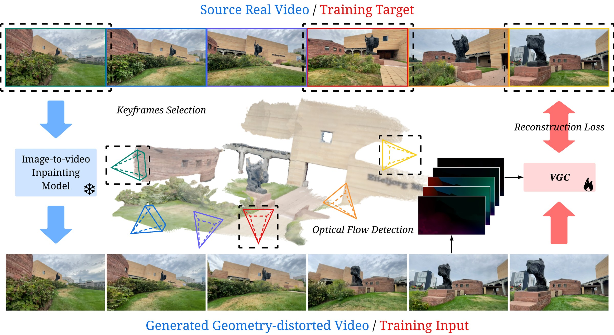

Generated videos often lose geometric consistency under camera motion: structures warp under viewpoint change, parallax becomes inconsistent, and smooth camera movement may collapse into shot-like transitions. We argue that this failure is largely a data problem. In web-scale video corpora, most visible motion comes from dynamic objects captured by static or weakly moving cameras, leaving only sparse supervision for viewpoint-induced appearance changes. To address this, we propose Video Geometry Corrector (VGC), a post-hoc video-to-video model trained on synthetic paired supervision. Starting from real videos with diverse camera motion and pose annotations, we construct VG-Pairs with a synthetic paired-supervision data generation pipeline. Each video clip is treated as a geometry-consistent target and paired with a distorted counterpart synthesized by a pretrained image-to-video inpainting model using trajectory-adaptive keyframes. VGC learns to map the distorted input to the geometry-consistent target without modifying the source generator, and uses optical flow as an auxiliary cue to help disentangle camera motion from object motion. Experiments on pose-conditioned and prompt-driven benchmarks show that VGC improves geometric consistency across multiple source generators, and scaling to a larger backbone further extends the framework toward more general video refinement.

Starting from a real video with diverse camera motion, we select trajectory-adaptive keyframes and use them to condition an image-to-video inpainting model, which produces a geometry-distorted video that serves as the training input. We then train VGC to map this distorted input to the geometry-consistent target video with reconstruction loss. Optical flow is computed from the distorted video and used as an additional conditioning signal for VGC, providing motion cues that help disentangle camera motion from scene dynamics. The 3D reconstruction is shown here only for visualization and is not used in the pipeline.
Training pairs from VG-Pairs, built from DL3DV. Each real video clip is the geometry-consistent target, paired with a distorted counterpart synthesized by Wan 2.1-Fun-InP. These clips have short or nearly linear camera trajectories, which are handled with a single segment between the first and last frames; clips with larger accumulated motion are split at trajectory-adaptive keyframes.
As the camera moves, the generated video hallucinates changes in things that should remain still: distant mountains drift, paintings and sofas slide, buildings warp, and trees or doors pop in and out of existence. VGC keeps the static structure of the scene rigid and persistent, so the only motion in the frame is the camera's.
When the generator does animate something, it often gets the dynamics wrong: vehicles travel in implausible directions, pedestrians walk through furniture, limbs and crowds deform. VGC restores physically coherent trajectories and articulated motion for both vehicles and humans.
@inproceedings{lyu2026vgc,
title = {Learning to Correct Geometry in Generated Videos},
author = {Lyu, Weijie and Shen, Tiancheng and Li, Xiangtai and Wang, Yujing and
Wang, Xiaoyuan and Yuan, Haobo and Zhao, Yizhou and Yang, Ming-Hsuan},
booktitle = {Advances in Neural Information Processing Systems (NeurIPS)},
year = {2026}
}